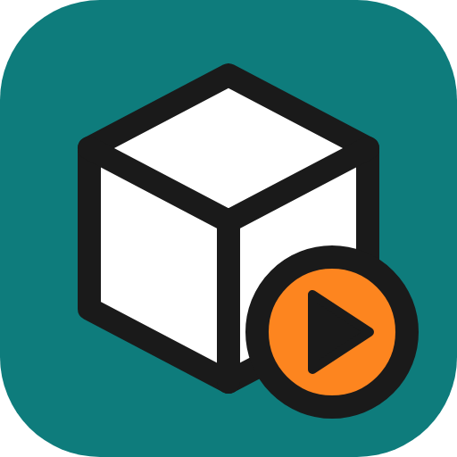
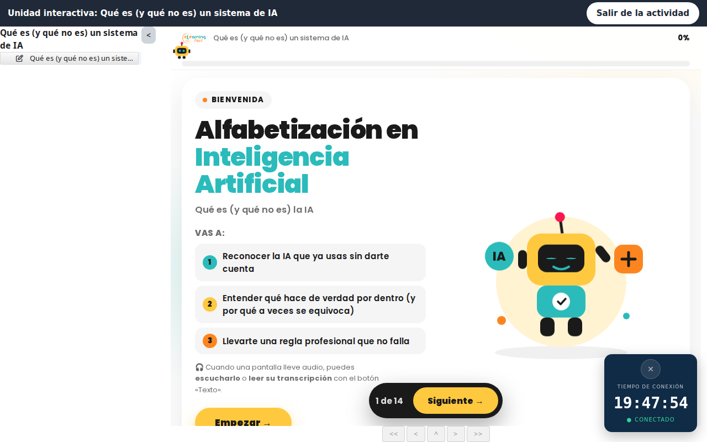
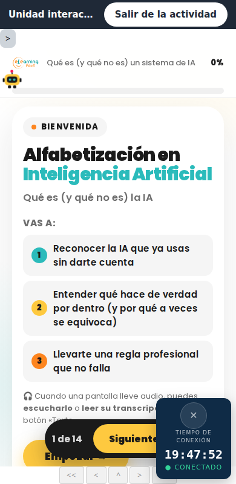
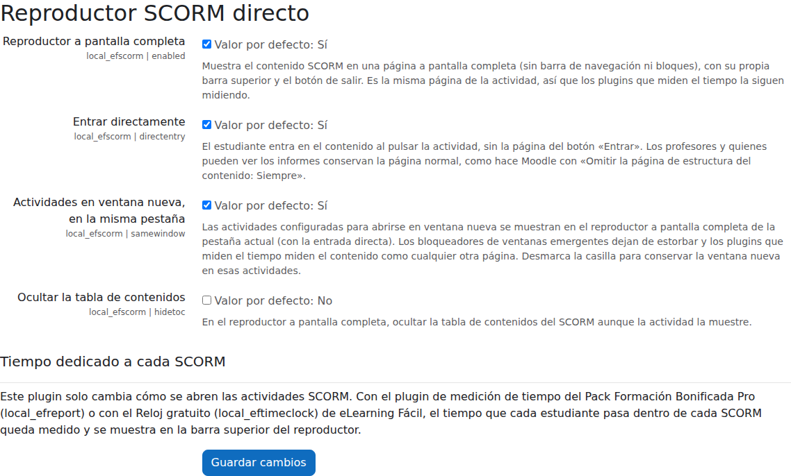

Plugin gratuito para Moodle™
Reproductor SCORM directo
Un clic y el estudiante ya está dentro del SCORM.
Guía del plugin · local_efscorm
Versión 0.3.0 · Compatible con Moodle™ 5.1, 5.2 y 5.3

Desarrollado y mantenido por eLearning Fácil
Una empresa independiente que crea plugins para Moodle™ para centros de formación y empresas:
seguimiento del tiempo, informes, certificados y gestión de alumnos.
elearningfacil.com · info@elearningfacil.com
Guía
El reproductor directo
El alumno pulsa la actividad y ya está dentro del contenido, a pantalla completa, sin ventanas nuevas.
1¿Qué es y para qué sirve?
El Reproductor SCORM directo cambia cómo se abren las actividades SCORM de Moodle,
sin tocar el módulo SCORM ni los paquetes: el estudiante entra directamente en el contenido y lo ve
a toda la ventana, con una barra superior y un botón para salir.
- Sin la página del botón «Entrar»: un clic en la actividad y el contenido ya está delante.
- A pantalla completa en la misma pestaña: sin barra de navegación, cajones ni pie del tema;
si el paquete es más grande que la ventana, aparecen barras de desplazamiento.
- Sin ventanas nuevas: las actividades configuradas «en ventana nueva» se abren también en la
pestaña actual, así los bloqueadores de ventanas emergentes dejan de dar problemas.
- Sigue siendo la página de la actividad: los plugins que miden el tiempo (el del Pack
Formación Bonificada Pro o el Medidor de tiempo real gratuito) la miden como cualquier otra y muestran su reloj.
- Vale con cualquier tema basado en Boost y no guarda ningún dato.
2Instalación
- Haz una copia de seguridad antes de instalar: base de datos, carpeta moodledata y código. Es lo
recomendable con cualquier plugin, aunque este no crea tablas ni toca datos.
- Administración del sitio → Extensiones → Instalar complementos: sube el ZIP y confirma.
- Listo: por defecto está activado en todo el sitio. Los ajustes están en
Administración del sitio → Extensiones → Complementos locales → Reproductor SCORM directo.
- Comprueba con un usuario con rol de estudiante que al pulsar un SCORM entra directo (los
profesores siguen viendo la página normal de la actividad, con los informes).
Nada que configurar en cada actividad
No hace falta cambiar «Omitir la página de estructura del contenido» ni el modo de ventana de cada
SCORM: el plugin lo resuelve para todas las actividades del sitio.
3Lo que ve el alumno
Al pulsar la actividad, el contenido ocupa toda la ventana bajo una barra con el nombre de la actividad y
el botón Salir de la actividad, que devuelve al alumno a la sección del curso (y cierra y guarda el
SCORM como siempre).

Barra superior neutra (vale con cualquier tema), el contenido a toda la ventana y, con el
Pack instalado, el reloj de tiempo del alumno.

En el móvil, lo mismo: barra, contenido y desplazamiento si el paquete no cabe.
- La tabla de contenidos de los paquetes con varias partes se muestra o no según la actividad
(hay un ajuste para ocultarla siempre).
- Si la actividad estaba configurada «en ventana nueva», el alumno la ve igualmente en la pestaña actual
(ajuste «Actividades en ventana nueva, en la misma pestaña», activado de serie).
- Los profesores y quienes pueden ver los informes conservan la página normal de la actividad, con el
botón «Entrar» y los enlaces a informes, como hace el propio Moodle.
4Ajustes
En Administración del sitio → Extensiones → Complementos locales → Reproductor SCORM directo.

| Ajuste | De serie | Qué hace |
|---|
| Reproductor a pantalla completa | Sí | Muestra el SCORM a toda la ventana con la barra superior y el botón de salir. Desactivado, el plugin no hace nada. |
| Entrar directamente | Sí | El estudiante entra en el contenido sin la página del botón «Entrar». |
| Actividades en ventana nueva, en la misma pestaña | Sí | Las actividades configuradas «en ventana nueva» se abren a pantalla completa en la pestaña actual. Desmárcalo para conservar la ventana nueva en esas actividades. |
| Ocultar la tabla de contenidos | No | En el reproductor, oculta la tabla de contenidos del SCORM aunque la actividad la muestre. |
5Medir el tiempo de cada SCORM
Este plugin solo cambia cómo se abren los SCORM y funciona igual sin nada más instalado. Para saber
cuánto tiempo pasa cada alumno dentro de cada paquete, eLearning Fácil tiene dos opciones, y las dos
muestran su reloj dentro del reproductor:
Medidor de tiempo real (gratuito)
local_eftimeclock: mide el tiempo real en las actividades (solo con la pestaña visible y con
foco), con informe por curso y descargas Excel y CSV.
Pack Formación Bonificada Pro
local_efreport y compañía: tiempo demostrado ante una auditoría, porcentaje sobre las horas
comunicadas, detalle por actividad, finalización por tiempo, comunicaciones y el expediente del curso.
elearningfacil.com/pack-fundae-moodle
Por qué importa la misma pestaña
Un SCORM en una ventana nueva es una ventana que el navegador puede bloquear y que los medidores de tiempo
no siempre ven. En la misma pestaña, el tiempo del SCORM es tiempo de la actividad: ni se pierde ni se infla.
6Qué toca y qué no
| Sí | No |
|---|
| Envía al estudiante al reproductor del propio Moodle, como hace «Omitir la página de estructura: Siempre». |
No modifica el módulo SCORM, los paquetes, los intentos, las calificaciones ni los informes. |
| Da a la página del reproductor el diseño mínimo del tema (sin barra ni bloques) y añade su barra superior. |
No abre ventanas ni usa capas sobre el curso: es la página de la actividad. |
| Se instala y se desinstala sin dejar rastro: no tiene tablas ni guarda datos personales. |
No cambia la configuración de ninguna actividad. |
Software libre (GPL v3), listo para el directorio de plugins de Moodle: sin llamadas externas ni recursos
de terceros, proveedor de privacidad declarado, pruebas automáticas y revisión de código en cada versión.
7Preguntas frecuentes
Un profesor dice que a él no le entra directo
Es lo esperado: quien puede ver los informes de la actividad conserva la página de entrada, con el botón
«Entrar» y los enlaces a informes. Para ver lo mismo que el alumno, Cambiar rol a… → Estudiante.
Quiero que una actividad concreta se abra en ventana nueva de verdad
Desmarca «Actividades en ventana nueva, en la misma pestaña»: todas las actividades configuradas así
vuelven a abrir su ventana. El ajuste es de sitio.
El contenido se ve recortado o no llena la ventana
El reproductor da al paquete toda la ventana (menos la barra y, si la actividad los muestra, la tabla de
contenidos y el panel de navegación) y pone barras de desplazamiento si es más grande. Si aun así se corta, el
tamaño lo fija el propio paquete (el ancho y el alto de la actividad solo valen para la ventana nueva). Si el
tema llevaba CSS propio para el reproductor SCORM, retíralo: gana sobre el del plugin.
El botón «Cerrar» del propio paquete no hace nada
Intenta cerrar una ventana que no existe: en la pestaña actual se sale con Salir de la actividad, que
cierra y guarda el SCORM igual.
eLearning Fácil
Otros plugins de eLearning Fácil
Hechos para centros de formación, empresas y academias que trabajan con Moodle™.
¿Quieres saber más?
Escríbenos y te contamos cuál encaja con tu Moodle™.
elearningfacil.com
info@elearningfacil.com · WhatsApp +34 647 002 997
Guía del plugin local_efscorm · versión 0.3.0 · © 2026 eLearning
Fácil · elearningfacil.com
Moodle™ es una marca registrada de Moodle Pty Ltd. FUNDAE® es marca registrada de la Fundación Estatal para la Formación en el Empleo. SCORM® es una marca registrada de Advanced Distributed Learning (ADL). eLearning Fácil no está vinculada, asociada ni respaldada por ninguna de ellas; los nombres se citan únicamente para describir la compatibilidad de nuestros productos.